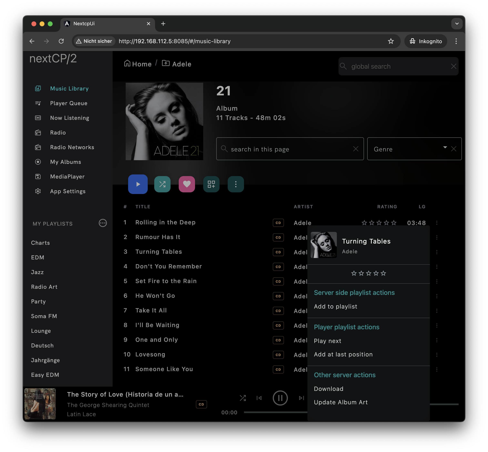

NextCP/2
This is a web-based UPnP control point focused on audio playback. Most control point applications run on a single device. This control point
allows besides a local installation, simultaneous access from any device with a current Chrome based web-browser if installed on a server device like NAS, file-server,
Raspberry PI.
The responsive user interface will adapt to most mobile devices. Tablets should be used in landscape mode for best experience. Phones should be used in portrait mode. Browser
can be used in any width but look best not larger than 1600px.
Quick Install Guide
Download current release into a folder of your choice. Make sure to use Java JDK 15. Start the application by calling
java -jar nextcp2-release.jar. For Windows user an exe file is provided for download (experimental). For Linux/Unix systems with systemd service manager
installed a service template can be downloaded here for starting nextcp/2 as a service.
After launching the application navigate with your browser to
http://server-ip-address:8085. If the application is started on the local machine
browse to http://127.0.0.1:8085. If port 8085 is already in use, edit the file nextcp2config.json located next to your jar file and
change property embeddedServerPort to an available port. Further configuration can be done within the application itself. Please refer to
GitHub for detailed configuration documentation.
After first startup it is recommended to configure a default client configuration which means choosing a default media server and a default media renderer by
navigating to
App Settings. Create NEW PROFILE and rename it to a meaningful name, select server and renderer, then press the save button.
In case of using the recommended Universal Media Server (UMS) as media server, unlock API features by editing UMS
configuration file
UMS.conf and add
api_key = 123456789012// Key must have at least 12 chars and is mandatoryaudio_update_rating_tag = true// If rating should be saved within the audio file (metadata section). Default is false.audio_likes_visible_root = true// If "My Albums" should be located in the root folder next to the library folder. Default is falsemanaged_playlist_folder = /volumes/music/playlists// change folder path to your music library's playlists folder. This folder should be reachable and scanned by UMS. All playlists found in this folder (no subfolder) will then be displayed in the sidebar. New playlists will also be created in this folder.
Media Server section and enter the configured API key. Press save. Reload the page for changes to be visible.
User Interface
Introduction
This control point put's it focus on providing the best user experience for audio enthusiasts. Controlling other content is also supported but with less UI
awareness.
Since most audio UI friendly features use functionality beyond the UPnP specification, special media server API support is required to unlock all features. Currently
only
Universal Media Server (UMS) supports all features and is therefore the recommended media server.
Additional features supported by UMS
- Like / Dislike music albums. Liked music albums can be directly accessed by "My Albums" sidebar link.
- star rating support for audio files
- export star rating to musicBrainz.org (account required)
- save star rating into song files metadata section
- Extended server side playlist support with editing support.
- create playlist in managed playlist folder
- direct access to playlist from sidebar
- adding songs to playlist
- removing songs from playlist
- UPnP search: Searching media library for artists, song title, creator and playlists
Music Library
While navigating through the media server folders, the displayed layout will change in regard to the content. Folders are subtitled by their name, playlists, images and radio
stations are additionally highlighted.
Enter text in
search content box to filter displayed items and containers.

Folder View

Playlist Files

Folder and Images
Album View
While browsing into an container that consists only of tracks of the same album the view switches to a track based display. Controls functions:
- Press switch view switches to a tiles based view. Pressing this button again will cycle back to a track based view.
- Press play will clear the current renderer playlist, add all tracks and start playback.
- Press shuffle will clear the current renderer playlist, add all tracks and start shuffle playback.
- Press add tracks will add all tracks to the current renderer playlist.
In case an album is identified by MusicBrainz-ReleaseId, liking this album is activated by displaying a heart symbol next to the album title.
Liked albums have a filled heart symbol otherwise the symbol is outlined. Liked album can then be quick accessed by clicking on
My Albums in the side bar.
Songs can be rated 1 to 5 by clicking on the desired star symbol. The rating can be send to musicBrainz.org if the account is
configured in
app settings. For UMS server: the rating information will be stored in the file itself if the audio file format is supported and
audio_update_rating_tag = true property is set in UMS.conf.
Clicking on the three dots will open song options dialog. For UMS server: the song can be added to a server based playlist, if
managed_playlist_folder = PATH_TO_FOLDER
property is set in UMS.conf and the PATH_TO_FOLDER folder has playlists. If the song is already in this playlist, an error message will appear.

Track View

song options popup
Multi Disc Support
Copy all audio files of your multi disc release in one folder. Songs will be sorted by disk and then by track ID, if songs are
tagged with correct numberOfThisDisc ID3 comments.

Playlist view
Browsing into server based playlists switches the display to a track view with small album covers. Clicking on switch view will change the display to an full sized
album view.

UPnP search
Entering text into the global search box initiates a search done by the media server.
Known media server with compatible UPnP search capabilities are Minimserver
and Universal Media Server (since 10.6.0).
Text will be matched against tracks, albums, playlists and artists. Artist covers are looked up from Spotify, if account is connected.


Player Queue
Displays playlist of currently active media player. The active song is highlighted. nextCP/2 supports native
OpenHome playlists, as well as self managed playlist for regular UPnP devices without internal playlist support.
Click on any music item to listen to it - playback will continue after the song ends.
Now Listening
Displays currently active player song. Song can be added to server playlist or star rated.
Radio
First rows consist of self managed Radio stations read from nextCP/2 configuration file. Next section displays radio
stations provided by the active player.
Click on the play symbol to play an online resource or radio station. Track and album information are updated if
supported by the media renderer device.
My Albums
Quick access for liked albums. This requires UMS as media renderer.
App Settings
Client profiles
Save and select a profile for default media server and media renderer. These defaults are browser specific saved. Repetitive access to the app with the same browser will
result in loading the same defaults. A message informs if a default device is not online.
Server Configuration
Card view of discovered media server. Server may be offline, if not yet found. Disabled server will not show up for selection in some popups or lists.
For a discovered UMS server the
UMS.conf configured API key should be entered for unlocking all features. Otherwise most audio convenience functions will not
work!
Media renderer configuration
Card display of discovered media renderer. Renderer may be offline, if not yet found. Disabled renderer will not show up for selection in some popups or lists.
If the media renderer is attached to a physical receiver / AV-device with remote control capability (in example by a RS232 or TCP/IP port),
select a compatible device driver and enter a device driver configuration string. Device driver for McIntosh devices is available for download.
It is recommended to set the media renderer volume to 100% if a device driver is selected. The device
driver notices a device power on state and will apply a default volume on the physical device after powering up.
If a streaming device is attached to an amplifier, a device device driver can be selected for controlling the amplifier power and volume state instead of the streamer
volume and power state. A default volume percentage can be applied to the external amplifier on power up. The streaming device volume can be set to 100% on power up, if
UPnP max volume is enabled.
Active Media Server
Here are additional UMS server actions available, if the active media server is an instance of UMS.
rescan media library :rescans UMS media library. Attention: This can be resource consuming on large media libraries!backup liked albums :backs up UMS liked albums in a separate backup file on the UMS server. In case the UMS media library is deleted, liked albums can be restored afterwards.restore liked albums :Restored liked albums from a backup file, if exists.sync :Restores star rating from stored musicbrainz.org account.
General Settings
device driver library path : Where to look for amplifier device drivers. Currently McIntosh amplifier like MA9000, MA12000 and other should work.database path : Where to store internal settings.server listening port : IP port to connect.Log4j config file : Where to look for a log4j2 config file.Logging date format : To adjust logging date format.Generate UPnP code : If enabled, cling UPnP access wrapper are generated for discovered UPnP services.path for generated UPnP code : Directory to store generated UPnP code.
Accounts
Spotify
Connect to Spotify account for discovering artists album art. If browser is connected to localhost, one step connection linking is availbale. Otherwise the
authCode
has to be copies manually in the code block.
Last FM
Account can be connected, but API is not used yet.
System Information
By now, only the build number is displayed.
Client Configuration
Renderer Configuration
General Configuration
Accounts
Alexa integration / voice control
Features
NextCP/2 offers a "simple device control" REST API, which can be used to voice control the following features:
- power on/off device
- play/pause radio station offered by UPnP device
- select input source for UPnP device
Integration with OpenHAB
In order to control the local NextCP/2 instance, a bridge to the Amazon Alexa system has to be established. In this example we use OpenHAB as a bridge.
Installation
The easiest way to install OpenHAB is by using a docker image. After installation go to
Settings -> Add-on Store -> Bindings and add the http binding. Then
continue with the configuration of the Amazon Alexa Smart Home Skill.
Thing Configuration
- Go to Settings -> Things and add a thing by pressing the plus sign.
- Click on http binding
- Click on HTTP URL Thing
- Set label to 'NextCP2', location to 'server'
- 'base-url' must point to your NextCP/2 installation : http://192.168.1.5:8085/SimpleDeviceControl. Change host and port according to your configuration.
Power (ON/OFF) Channel Configuration
Go to NextCP/2 window and identify the device you want to control in the "App Settings" and copy the DEVICE_UUID. Go back to OpenHAB window.
- Click on the new added thing and click on channels.
- Click on add channel.
- Select Switch-Channel.
- Configure the channel by adding a label like "Amplifier Power".
- Enter for "command url extension" /standby/DEVICE_UUID/%2$s
- Enter for "status url extension" /standby/DEVICE_UUID
- Enter for "ON value" false
- Enter for "OFF value" true
- SAVE
- In the channel overview. Identify the new created channel "Amplifier Power" and click on "Add link to item"
- Click on "create new item". Choose an identifying name that will be used in Alexa later like "Amplifier". Click on "link".
Radio player configuration
Go to NextCP/2 window and identify the device you want to control in the "App Settings" and remember the DEVICE_UUID.
Then identify the Radio station by clicking on "Radio" url encode the radio label and remember it.
It is sufficient to copy only the first parts of the radio station label, that uniquely identifies the radio station. Go back to OpenHAB window.
- Click on the new added thing and click on channels.
- Click on add channel.
- Select Player-Channel.
- Configure the channel by adding a label like "Play Radio Energy".
- Enter for "command url extension" %2$s
- Enter for "PLAY-VALUE" : playDefaultRadio/DEVICE_UUID/URL_ENCODED_RADIO_LABEL. This should look something like this : playDefaultRadio/5c463e4e-3e9b-12f1-c87c-1116e308ef4c/103.9%20%7C%20radio%20energy
- Enter for "PAUSE-VALUE" : playDefaultRadio/DEVICE_UUID.
- In the channel overview. Identify the new created channel "Play Radio Energy" and click on "Add link to item"
- Click on "create new item". Choose an identifying name that will be used in Alexa later like "Radio Energy". Click on "link".
Item / Alexa integration
- Click on Settings -> Items
- Select the create Power ON/OFF item.
- Click "Add Metadata"
- Select "Amazon Alexa"
Rules
Rules can be used to further customization. Let's say if OpenHAB receives the POWER ON command for the amplifier (i.e. from Alexa), it should also
play radio energy.
- Click on Settings -> Rules and add a rule.
- Give a label
- For "When" click "Add Trigger"
- select the "Amplifier Power" item
- For "COMMAND" enter "ON"
- Press save
- For "Then" click "Add Action"
- select the "Play Radio Energy" item
- For "COMMAND" enter "PLAY"
- Press save
Test it
Now, the Amplifier should be visible in Alexa-App. You should be able to say "Alexa, power on Amplifier".
As a result, your device should power on and Radio Energy should be played.
Issues
There might be some usage issues. Feel free to leave a ticket.
Compatibility
Browser
This software is tested with the current Chrome browser on desktop and mobile devices, but should also work with
other chromium based browsers like Safari.
Content Delivery Server (media server)
By now, only universal media server supports all features and is the recommended media server.
This software has also been tested with
- Serviio : https://serviio.org/
- Minimserver : https://minimserver.com/
Player (media renderer)
This software has been tested with
- MediaPlayer : https://github.com/PeteManchester/MediaPlayer
- Lumin Streamer (U1 Mini)
- Naim Streamer (MuSo-Qb)